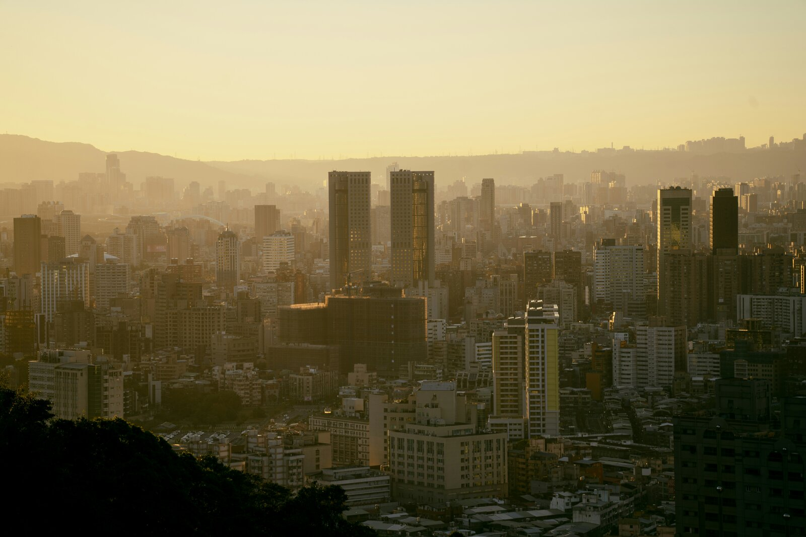
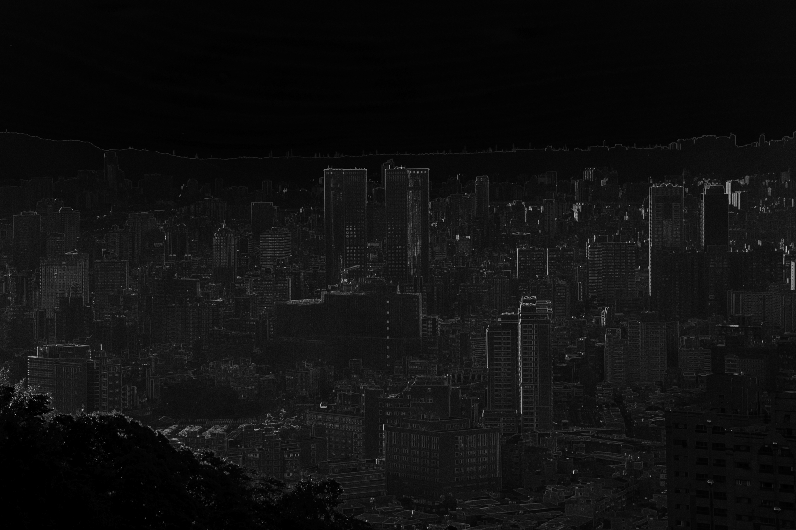
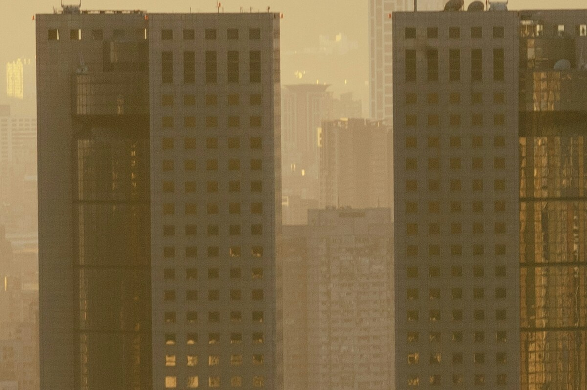
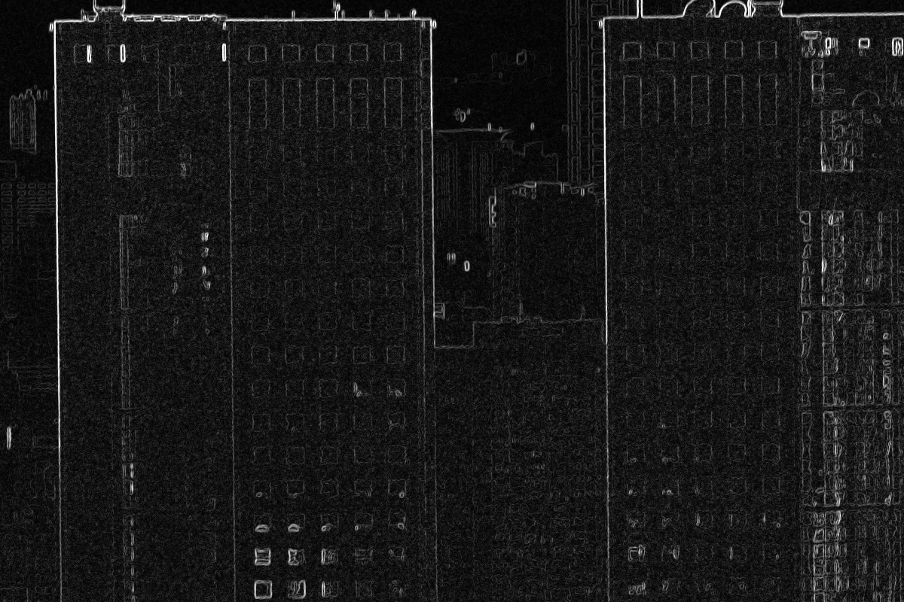

Estudiante: Jordy Romero
Repositorio: github.com/jordyromero03/Procesamiento_Paralelo_Imagenes_Sobel_Java
Asignatura: Computación Paralela
Fecha: 19 de octubre de 2026
Aplicar detección de bordes a una imagen de alta definición descargada de Unsplash, con un tamaño original mayor a 6000 × 6000 píxeles, definiendo la máscara de convolución y repartiendo el trabajo entre varios hilos con Java Threads. Después comparo el tiempo de la versión secuencial con el de la versión paralela usando distintas cantidades de hilos, y calculo la aceleración (speedup) y la eficiencia.
Para el paralelismo uso directamente la clase Thread con start() y join().
No uso ExecutorService, parallelStream() ni bibliotecas de visión como OpenCV:
todo el filtro está escrito a mano con la biblioteca estándar de Java.
| Dato | Valor |
|---|---|
| Fuente | Unsplash – Cityscape under warm golden sky |
| Licencia | Licencia Unsplash (uso libre) |
| Resolución original | 9504 × 6336 píxeles |
| Total de píxeles | 60 217 344 (≈ 60.2 megapíxeles) |
| Archivo | JPEG, ≈ 19 MB (imagenes/original.jpg) |
| Memoria al decodificar | ≈ 180 MB (3 bytes por píxel, RGB) |
Elegí una ciudad porque tiene muchos bordes: edificios, ventanas, antenas y el horizonte. Así el resultado se nota bien. Las dos dimensiones superan 6000 píxeles, y el programa lo comprueba antes de procesar: si la imagen es más pequeña, se detiene con un error.
Un borde es un lugar de la imagen donde la intensidad cambia de golpe, por ejemplo entre la pared clara de un edificio y el cielo. Para encontrarlo no hace falta el color, solo el brillo de cada píxel. Por eso primero convierto la imagen a escala de grises.
Uso la fórmula de luminancia ITU-R BT.601, que da más peso al verde porque el ojo es más sensible a ese color:
Y = 0.299·R + 0.587·G + 0.114·B
El resultado es un arreglo byte[] gris de 9504 × 6336 posiciones (≈ 60 MB), donde cada valor va de 0 (negro)
a 255 (blanco).
Una máscara (o kernel) es una matriz pequeña de coeficientes. Para cada píxel, la coloco encima de él y de sus 8 vecinos, multiplico cada coeficiente por el valor del píxel que tiene debajo y sumo los 9 productos. Esa operación se llama convolución. Sobel usa dos máscaras de 3 × 3:
| −1 | 0 | +1 |
| −2 | 0 | +2 |
| −1 | 0 | +1 |
| −1 | −2 | −1 |
| 0 | 0 | 0 |
| +1 | +2 | +1 |
Con los dos valores calculo la magnitud del gradiente, que dice qué tan fuerte es el borde:
G = √(Gx² + Gy²) (si pasa de 255 se recorta a 255)
En el código las máscaras están definidas así (src/DeteccionBordes.java:19):
static final int[][] GX = {
{-1, 0, 1},
{-2, 0, 2},
{-1, 0, 1}
};
static final int[][] GY = {
{-1, -2, -1},
{ 0, 0, 0},
{ 1, 2, 1}
};
Un vecindario de 3 × 3 con un borde vertical (oscuro a la izquierda, claro a la derecha):
| 10 10 200 | Gx = (−10 + 200) + (−20 + 400) + (−10 + 200) = 760 | 10 10 200 | Gy = −(10 + 20 + 200) + (10 + 20 + 200) = 0 | 10 10 200 | G = √(760² + 0²) = 760 → se recorta a 255 (blanco: hay borde)
Un vecindario uniforme:
| 90 90 90 | Gx = 0, Gy = 0, G = 0 → negro (no hay borde) | 90 90 90 | | 90 90 90 |
Los píxeles del marco exterior (primera y última fila y columna) quedan en negro, porque ahí la máscara no tiene los 9 vecinos completos.
original.jpg ──► ImageIO.read ──► ¿ancho y alto > 6000? ──► escala de grises (byte[] gris)
│
┌───────────────────────────────────────────────┤
▼ ▼
Sobel secuencial Sobel con 1, 2, 4, 8 y 16 hilos
(bucle normal) (Thread + start + join)
│ │
└──────────────► comparar salidas ◄─────────────┘
│
tabla de tiempos, speedup y eficiencia
│
bordes_secuencial.png / bordes_threads.png
Un solo hilo (el principal) recorre todas las filas interiores de la imagen, de la 1 a la alto − 2,
y aplica las dos máscaras a cada píxel. La lógica está en el método sobelFilas
(src/DeteccionBordes.java:105), que recibe el rango de filas que debe procesar:
static void sobelFilas(byte[] gris, byte[] salida, int ancho, int filaInicio, int filaFin) {
for (int y = filaInicio; y < filaFin; y++) {
for (int x = 1; x < ancho - 1; x++) {
int gx = 0;
int gy = 0;
for (int ky = -1; ky <= 1; ky++) {
for (int kx = -1; kx <= 1; kx++) {
int pixel = gris[(y + ky) * ancho + (x + kx)] & 0xFF;
gx += pixel * GX[ky + 1][kx + 1];
gy += pixel * GY[ky + 1][kx + 1];
}
}
int magnitud = (int) Math.sqrt((double) gx * gx + (double) gy * gy);
salida[y * ancho + x] = (byte) Math.min(255, magnitud);
}
}
}
En la versión secuencial se llama una sola vez con todas las filas: sobelFilas(gris, salida, ancho, 1, alto - 1).
No se crea ningún Thread. Así es una referencia limpia para comparar.
En total son 9502 × 6334 ≈ 60.2 millones de píxeles, y cada uno necesita 18 multiplicaciones (9 por máscara): ≈ 1080 millones de multiplicaciones por pasada.
La idea es repartir la imagen en franjas horizontales de filas seguidas, una por hilo, como si varias
personas pintaran una pared y cada una se encargara de una franja. Todos los hilos ejecutan el mismo método
sobelFilas; lo único que cambia es el rango de filas.
Imagen 9504 × 6336 (filas interiores 1 .. 6334), ejemplo con 4 hilos ┌──────────────────────────────────────┐ fila 1 │ sobel-0 filas 1 .. 1583 │ ├──────────────────────────────────────┤ │ sobel-1 filas 1584 .. 3167 │ cada hilo lee 1 fila extra arriba y abajo ├──────────────────────────────────────┤ (solo lectura), pero escribe │ sobel-2 filas 3168 .. 4750 │ únicamente en sus propias filas ├──────────────────────────────────────┤ │ sobel-3 filas 4751 .. 6334 │ └──────────────────────────────────────┘ fila 6334
Los pasos son:
Thread con un objeto TrabajadorSobel
(implementa Runnable) que guarda su rango.start().join() sobre cada uno. Funciona como una barrera: no sigue
hasta que todos terminan.Arrays.equals.El reparto y la creación de hilos (src/DeteccionBordes.java:124):
static void sobelConHilos(byte[] gris, byte[] salida, int ancho, int alto, int numeroHilos)
throws InterruptedException {
int filasInteriores = alto - 2;
Thread[] hilos = new Thread[numeroHilos];
for (int i = 0; i < numeroHilos; i++) {
int inicio = 1 + (int) ((long) i * filasInteriores / numeroHilos);
int fin = 1 + (int) ((long) (i + 1) * filasInteriores / numeroHilos);
hilos[i] = new Thread(new TrabajadorSobel(gris, salida, ancho, inicio, fin), "sobel-" + i);
hilos[i].start();
}
for (Thread hilo : hilos) {
hilo.join(); // barrera: esperar a que todos terminen
}
}
Y la tarea de cada hilo (src/DeteccionBordes.java:141):
static class TrabajadorSobel implements Runnable {
...
@Override
public void run() {
sobelFilas(gris, salida, ancho, filaInicio, filaFin);
}
}
Uso (long) i * filasInteriores para que la multiplicación no se desborde en imágenes muy grandes, y
calculo el fin del hilo i con la misma fórmula que el inicio del hilo i + 1. Así no queda ninguna
fila sin procesar ni ninguna fila procesada dos veces.
synchronizedUna condición de carrera aparece cuando dos hilos escriben en la misma posición de memoria, o uno escribe mientras otro lee. En este programa eso no pasa:
gris es de solo lectura: todos los hilos lo leen y ninguno lo modifica. Por eso un
hilo puede leer sin problema la fila de la franja vecina.salida, cada hilo escribe solo en sus propias filas. Ningún píxel es escrito
por dos hilos.join() garantiza que el hilo principal ve todo lo que escribieron los hilos (relación
happens-before del modelo de memoria de Java) antes de comparar o guardar.
Poner synchronized dentro del bucle no aportaría seguridad y obligaría a los hilos a turnarse en cada
píxel, lo que eliminaría el paralelismo.
System.nanoTime() y uso la mediana, que
no se deja arrastrar por una ejecución lenta aislada.Fórmulas:
Speedup S = T_secuencial / T_paralelo Eficiencia E = S / N × 100 % (N = número de hilos)
| Componente | Detalle |
|---|---|
| Procesador | Intel Core i7-11800H @ 2.30 GHz |
| Núcleos | 8 físicos, 16 lógicos (Hyper-Threading, 2 hilos por núcleo) |
| Sistema operativo | CachyOS Linux |
| Java | OpenJDK 21, ejecutado con -Xmx3g |
Salida del programa (guardada en resultados/salida_consola.txt):
Imagen: 9504 x 6336 (60.2 MP)
Conversion a gris: 989.8 ms
Hilos | Tiempo (ms) | Speedup | Eficiencia | Igual al secuencial
------+-------------+---------+------------+--------------------
sec | 589.7 | 1.00x | 100.0% | -
1 | 620.6 | 0.95x | 95.0% | si
2 | 250.8 | 2.35x | 117.6% | si
4 | 195.8 | 3.01x | 75.3% | si
8 | 76.3 | 7.73x | 96.6% | si
16 | 78.7 | 7.49x | 46.8% | si
| Configuración | Filas por hilo | Tiempo (ms) | Speedup | Eficiencia | ¿Igual al secuencial? |
|---|---|---|---|---|---|
| Secuencial | 6334 | 589.7 | 1.00× | 100.0 % | – |
| 1 hilo | 6334 | 620.6 | 0.95× | 95.0 % | sí |
| 2 hilos | 3167 | 250.8 | 2.35× | 117.6 % | sí |
| 4 hilos | ≈ 1584 | 195.8 | 3.01× | 75.3 % | sí |
| 8 hilos | ≈ 792 | 76.3 | 7.73× | 96.6 % | sí |
| 16 hilos | ≈ 396 | 78.7 | 7.49× | 46.8 % | sí |
ideal (S = N) real · escala de 0× a 16×
Barra completa = 100 % (el valor de 2 hilos supera el 100 % y se muestra recortado).
Ejecuté el programa dos veces en el mismo equipo. Los valores cambian, sobre todo con 1, 2 y 4 hilos, pero la tendencia es la misma:
| Hilos | Ejecución 1 (ms) | S | Ejecución 2 (ms) | S |
|---|---|---|---|---|
| Secuencial | 587.1 | 1.00× | 589.7 | 1.00× |
| 1 | 555.2 | 1.06× | 620.6 | 0.95× |
| 2 | 274.7 | 2.14× | 250.8 | 2.35× |
| 4 | 169.3 | 3.47× | 195.8 | 3.01× |
| 8 | 90.1 | 6.52× | 76.3 | 7.73× |
| 16 | 80.5 | 7.29× | 78.7 | 7.49× |
En las dos ejecuciones todas las salidas paralelas fueron idénticas a la secuencial.
Las imágenes de esta sección están reducidas para que el informe cargue rápido. Los archivos completos
(9504 × 6336) están en imagenes/original.jpg y resultados/bordes_threads.png.


A tamaño reducido la imagen de bordes se ve oscura: en una foto de 60 megapíxeles cada borde mide pocos píxeles de ancho, y al achicarla esos bordes finos se mezclan con el fondo negro. Por eso agrego un recorte al 100 %.
Zona de 1200 × 800 píxeles a partir de la posición (3800, 2000), sin redimensionar:


En el recorte se ve lo que hace cada máscara:
Con 8 hilos el filtro pasa de ≈ 590 ms a ≈ 76–90 ms (speedup entre 6.5× y 7.7×). El equipo tiene 8 núcleos físicos, así que cada hilo ocupa su propio núcleo y trabajan de verdad al mismo tiempo. Esto funciona tan bien porque el problema es muy fácil de dividir: los píxeles no dependen unos de otros, solo leen datos que nadie modifica (un problema "embarazosamente paralelo").
Con 16 hilos el tiempo es prácticamente igual que con 8 y la eficiencia cae a ≈ 47 %. Hay dos razones:
gris y escribe ≈ 60 MB de
salida. Con muchos hilos, la memoria RAM ya no entrega los datos tan rápido como los núcleos los
procesan.
Con 1 hilo el trabajo es exactamente el mismo, pero además hay que crear el Thread, arrancarlo y
esperarlo con join(). Por eso el speedup queda alrededor de 1× (0.95× y 1.06× en las dos ejecuciones).
Muestra el costo fijo de usar hilos.
Con 2 hilos salió una eficiencia de 117.6 % en una ejecución. No es una aceleración superlineal real: es variación de medición. El procesador ajusta su frecuencia (Turbo Boost) según la carga y la temperatura, la caché se comporta distinto con menos datos por núcleo y el sistema operativo tiene otros procesos. En la otra ejecución el mismo caso dio 107 %. Por eso no tomo un número aislado, sino la tendencia.
La conversión a escala de grises tarda ≈ 990 ms y se hace con un solo hilo. Es más lenta que el propio filtro Sobel secuencial. Si tomo las dos fases juntas:
| Fase | Secuencial (ms) | Con 8 hilos (ms) |
|---|---|---|
| Escala de grises (no paralelizada) | 989.8 | 989.8 |
| Sobel | 589.7 | 76.3 |
| Total | 1579.5 | 1066.1 |
El filtro se aceleró 7.7×, pero estas dos fases juntas solo 1579.5 / 1066.1 ≈ 1.48×. Es la ley de Amdahl: la parte secuencial (aquí ≈ 63 % del tiempo) limita la aceleración total, sin importar cuántos hilos se agreguen al resto. La mejora natural sería paralelizar también la conversión a gris con el mismo reparto por filas.
Partí de una primera propuesta de código que ya usaba Sobel y repartía filas entre hilos. Al revisarla encontré varios problemas y los corregí:
| Problema en la primera versión | Por qué era un problema | Cómo lo resolví |
|---|---|---|
synchronized (salida) en cada píxel |
Los hilos se turnaban para escribir: se perdía el paralelismo. No hacía falta porque cada hilo escribe en filas distintas. | Lo quité y escribo en un byte[] con zonas separadas por hilo. |
| Medía la primera ejecución, sin calentamiento | El JIT todavía no había compilado el código y la versión secuencial salía más lenta, lo que inflaba el speedup. | 3 ejecuciones de calentamiento y mediana de 5 mediciones. |
La "versión secuencial" creaba un Thread |
No era una referencia secuencial pura. | Secuencial = bucle normal sin hilos; el caso de 1 hilo se mide aparte. |
| Probaba un solo número de hilos | No se podía ver cómo crece la aceleración ni dónde se estanca. | Pruebo 1, 2, 4, 8 y 16 hilos. |
| No comprobaba el resultado | No había evidencia de que la versión paralela calcule lo mismo. | Comparación con Arrays.equals en cada configuración. |
Escribía en la imagen con setSample píxel a píxel |
Más lento y más difícil de razonar sobre concurrencia. | Escribo en un arreglo y lo copio a la imagen una sola vez al guardar. |
join() fue la única coordinación necesaria.Requiere JDK 17 o superior. Desde la carpeta raíz del proyecto:
./run.sh # Linux / macOS run.bat # Windows # o manualmente: javac -d out src/*.java java -Xmx3g -cp out DeteccionBordes
En VS Code basta con abrir la carpeta y pulsar F5. El README.md tiene las instrucciones completas
y la solución a los errores más comunes.
java.lang.Thread. docs.oracle.com